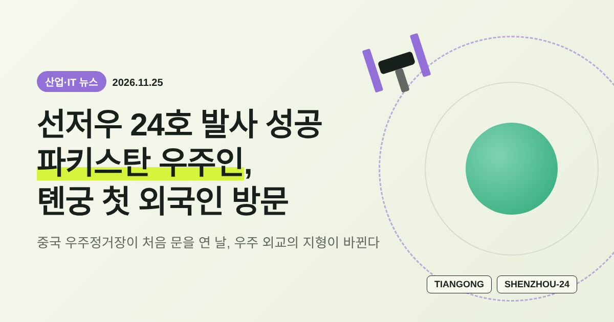
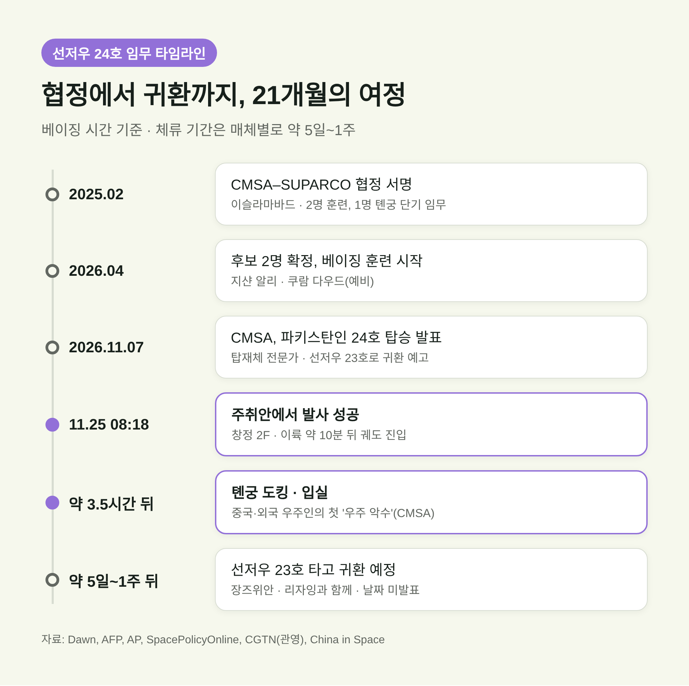
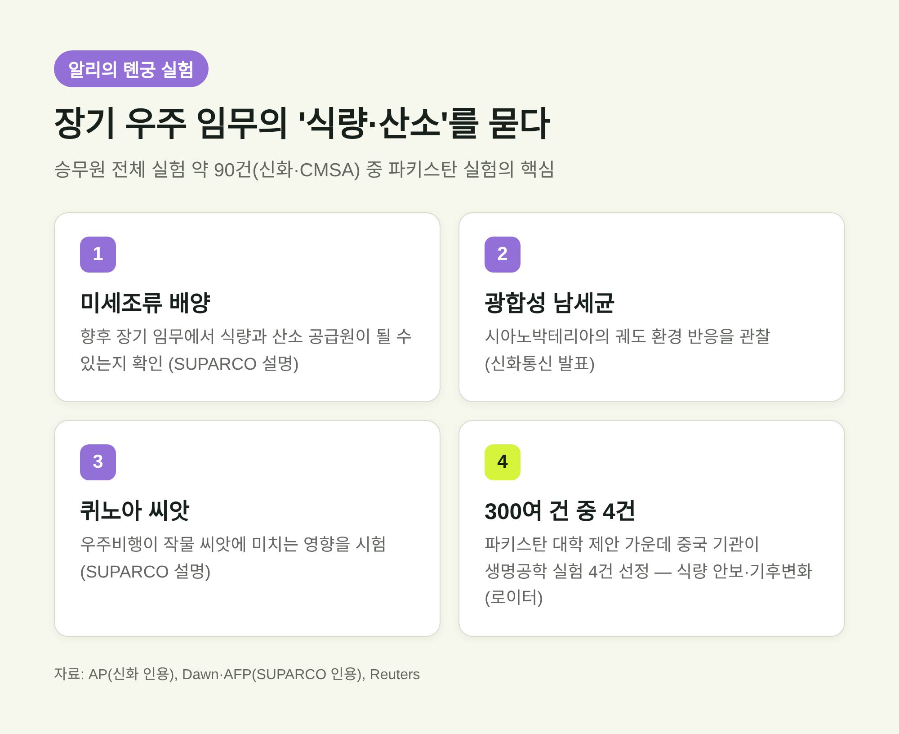
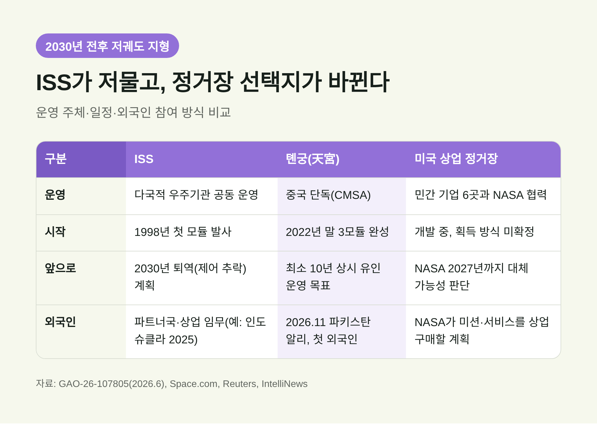
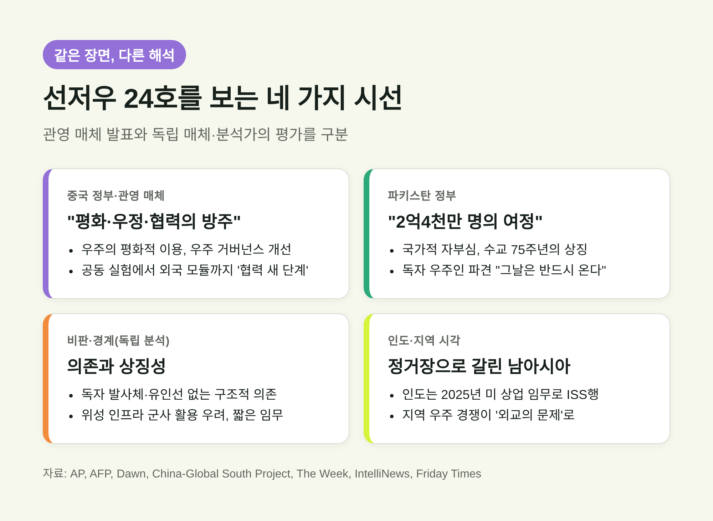
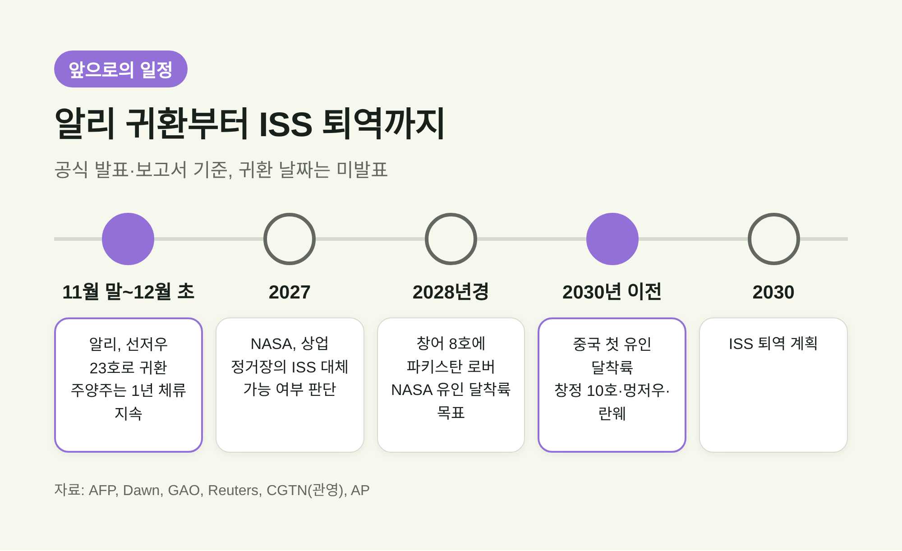

선저우 24호 발사 성공, 파키스탄 우주인이 연 톈궁 첫 외국인 방문

이번 글에서는 11월 25일 발사된 중국 유인우주선 선저우 24호를 정리해 보겠습니다. 파키스탄 우주인이 처음으로 중국 우주정거장 톈궁에 오른 이번 비행이 왜 '우주 외교'의 분기점으로 읽히는지, 그리고 한국에는 어떤 질문을 남기는지 차례로 짚어봅니다.
3줄 요약
- 선저우 24호가 25일 오전 8시 18분(베이징 시간) 주취안에서 발사돼 약 3시간 반 만에 톈궁에 도킹했습니다. 탑승자 중 무함마드 지샨 알리(40)는 궤도에 오른 첫 파키스탄인이자 톈궁 첫 외국인입니다.
- 알리는 탑재체 전문가로 닷새~일주일 안팎 머물며 미세조류·남세균·퀴노아 씨앗 실험을 한 뒤 선저우 23호로 귀환합니다.
- 2030년 ISS 퇴역을 앞두고, 중국 정거장이 '외국인을 받는 궤도'가 됐다는 점에서 지정학적 의미가 큽니다. 다만 해석은 엇갈립니다.
■ 무슨 일이 있었나 — 발사부터 '우주 악수'까지
선저우 24호는 11월 25일 오전 8시 18분, 간쑤성 주취안 위성발사센터에서 창정 2F 로켓에 실려 떠났습니다. 협정세계시로는 0시 18분, 파키스탄 시간으로는 새벽 5시 18분입니다. 이륙 약 10분 뒤 우주선이 로켓에서 분리돼 궤도에 들어섰고, 중국 유인우주국(CMSA)은 "발사 임무 완전 성공"을 선언했습니다.
도킹까지는 약 3시간 반이 걸렸습니다. 파키스탄 일간 Dawn은 CMSA를 인용해 '3시간 38분'이라고 전했습니다. 세 사람은 곧 정거장으로 옮겨 탔고, CMSA는 이를 중국과 외국 우주인의 첫 '우주 악수'라고 표현했습니다(AFP).
승무원은 세 명입니다.
| 이름 | 나이 | 역할 | 비고 |
|---|---|---|---|
| 탕훙보 | 51 | 사령관 | 선저우 12호(2021)·17호에 이은 세 번째 비행, 톈궁 3회 방문 첫 사례 |
| 우이 | 39 | 조종사(매체에 따라 비행 엔지니어) | 첫 비행 |
| 무함마드 지샨 알리 | 40 | 탑재체 전문가 | 파키스탄 공군 조종사 출신(AFP), 첫 비행 |
예비 탑재체 전문가는 함께 훈련한 쿠람 다우드였습니다. 중국 유인우주 역사상 외국인이 탑승한 공동 비행은 이번이 처음입니다.

■ 알리는 무엇을 하고, 언제 돌아오나
알리의 임무는 짧습니다. 체류 기간은 매체마다 조금 다릅니다. AFP는 약 닷새, Dawn과 SpacePolicyOnline은 약 일주일로 전했습니다. 귀환은 선저우 24호가 아니라 지난 5월부터 정거장에 머문 선저우 23호를 탑니다. 23호 승무원 장즈위안, 그리고 홍콩 출신 첫 우주인 리자잉과 함께입니다.
23호 사령관 주양주는 남습니다. 그는 중국 첫 1년 장기 체류에 도전하며, 성공하면 중국 우주인의 단일 최장 체류 기록을 세웁니다. 탕훙보와 우이는 그 곁에서 다음 교대 주기를 이어갑니다.
실험은 승무원 전체로 90건 남짓입니다(신화통신 인용 AP, CMSA 인용 Dawn). 알리가 맡은 것은 생명공학 쪽입니다.
- 광합성 남세균(시아노박테리아) 실험 — 신화통신 발표
- 미세조류 배양 — 장기 임무에서 식량·산소원이 될 수 있는지 확인(파키스탄 우주국 SUPARCO 설명)
- 퀴노아 씨앗이 우주비행에 어떤 영향을 받는지 시험
로이터 보도에 따르면 이 실험들은 파키스탄 대학들이 낸 300건 넘는 제안 가운데 중국 측이 고른 4건입니다. 식량 안보와 기후변화 대응이 공통 주제입니다.

■ 왜 중요한가 — 톈궁이 처음 문을 열었다
톈궁은 톈허 핵심모듈과 원톈·멍톈 실험모듈로 이뤄진 T자형 정거장입니다. 2022년 말 완성됐고, 중국은 최소 10년간 상시 유인 운영을 목표로 합니다. 로이터에 따르면 무게는 약 77톤으로, 지금까지 180건 넘는 실험과 500편 이상의 논문을 낳았습니다.
그동안 이 정거장은 중국인만의 공간이었습니다. 외국인 우주인이 그 문을 넘은 적은 한 번도 없었습니다.
예전에는 '외국인이 우주에 가려면 미국이나 러시아의 좌석을 빌려야 한다'는 공식이 있었습니다. 이제는 선택지가 하나 더 생겼습니다. 자국 유인우주선을 띄운 나라는 지금도 러시아·미국·중국 셋뿐입니다(로이터). 그중 중국이 처음으로 외국인을 태웠다는 점이 이번 비행의 무게입니다.
시점도 공교롭습니다. 국제우주정거장(ISS)은 2030년 퇴역이 계획돼 있습니다. 미 회계감사원(GAO)은 올해 6월 보고서에서 NASA가 상업 정거장 6개 사업자와 협력 중이지만 획득 방식이 아직 확정되지 않았고, 2027년까지 대체 가능 여부를 판단해야 한다고 짚었습니다. 상업 정거장이 늦어지면 미국 측 유인 거점에 공백이 생길 수 있다는 경고도 담겼습니다.

■ 배경 — 중국과 파키스탄은 어떻게 여기까지 왔나
출발점은 2025년 2월입니다. CMSA와 SUPARCO가 이슬라마바드에서 협정을 맺고, 파키스탄인 2명을 중국에서 훈련해 1명을 톈궁에 보내기로 했습니다. 선발은 세 단계였습니다. 예비 선발은 파키스탄에서, 2차와 최종은 중국에서 치렀습니다.
2026년 4월 알리와 다우드가 최종 후보로 확정됐습니다. 두 사람은 베이징 중국우주인연구훈련센터에서 실습과 함께 중국어 집중 교육을 받았습니다. 11월 7일 CMSA가 파키스탄인의 24호 탑승을 발표했고, 실명은 발사 전날 기자회견에서 확정됐습니다. 탕훙보 사령관은 그 자리에서 언어·문화·심리 차이 때문에 공동 훈련이 쉽지 않았다고 털어놓았습니다.
두 나라의 우주 협력은 오래됐습니다. 1990년 파키스탄 첫 위성을 중국 로켓이 쏘아 올렸고, 파키스탄은 2023년 중국 주도 국제달연구기지(ILRS)에 합류했습니다. 2028년경 창어 8호에는 파키스탄 로버가 실릴 예정입니다. 올해는 수교 75주년이기도 합니다.
다만 한계도 분명합니다. 파키스탄은 독자 발사체도 유인 우주선도 없습니다. 이번 비행 역시 중국 우주선과 발사장, 중국인 교관, 중국어 교신에 기댔습니다(로이터). 파키스탄 매체 Friday Times의 기고는 SUPARCO 개발 예산이 2025~26 회계연도에 90% 넘게 깎였다는 분석을 인용하며, 협력이 국내 역량을 대신하는 데 그쳐선 안 된다고 지적했습니다.
■ 쟁점 — 같은 장면, 엇갈리는 해석
이번 비행을 보는 시선은 하나가 아닙니다. 관영 매체와 독립 매체, 이해 당사국의 목소리를 나눠 보면 다음과 같습니다.
중국 관영 매체·정부. 시진핑 주석은 자르다리 파키스탄 대통령과 축전을 주고받으며 정거장을 "평화·우정·협력의 방주"로 불렀습니다. CCTV에 따르면 "우주의 평화적 이용"과 "글로벌 우주 거버넌스 개선"도 함께 내세웠습니다. 중국 측 전문가들은 공동 실험에서 외국 모듈 결합까지 이어지는 '협력의 새 단계'로 의미를 부여합니다.
파키스탄 정부. 샤리프 총리는 "한 우주인이 아니라 2억4천만 파키스탄인의 여정"이라고 했습니다. 아산 이크발 기획장관은 독자 우주인 파견에 대해 "그날은 반드시 온다"고 답했습니다.
독립 매체·분석가. 울프 수정조항으로 NASA와 중국의 양자 협력이 막히자, 중국이 대외 개방으로 응수하고 있다는 해석이 나옵니다. 유럽우주국(ESA)은 2015년 협정까지 맺었지만, 2023년 "예산도 정치적 승인도 없다"며 톈궁 파견 계획을 접었습니다. 안보 분석가들은 위성 인프라의 군사적 활용 가능성과 중국 시스템에 대한 의존을 우려합니다. 탑재체 전문가의 단기 체류는 역할이 좁아 상징성이 실질보다 크다는 평가도 있습니다.
인도의 시선. 인도는 2025년 슈방슈 슈클라를 미국 상업 임무로 ISS에 보냈습니다. 남아시아의 두 경쟁국이 각각 미국과 중국의 정거장을 택한 셈입니다. 인도 매체 The Week가 인용한 분석가는 이 지역의 우주 경쟁이 이제 기술만큼 외교의 문제가 됐다고 봤습니다.

■ 한국에 주는 시사점
한국은 아직 두 번째 우주인을 배출하지 못했습니다. 우주항공청은 2030년대 중반쯤 우주인 양성과 유인 발사체를 추진하겠다는 구상을 밝힌 바 있습니다(2025년 2월). 당시 윤영빈 청장은 경제성을 신중히 따져야 한다고 하면서, 2030년대 민영화되는 정거장의 모듈 하나를 확보할 수 있다면 참여를 검토할 수 있다고 했습니다.
올해 우주항공청 예산은 처음으로 1조원을 넘었습니다. 아르테미스 2호에는 국산 방사선 측정 큐브위성이 실리고, 한·미 아르테미스 협력 워킹그룹도 돌아갑니다.
파키스탄 사례가 보여주는 것은 단순합니다. 궤도에 사람을 보내는 길은 자국 발사체 하나만이 아니라는 점입니다. '어느 정거장의 좌석과 실험 랙을 확보하느냐'가 곧 외교 의제가 됩니다. ISS 이후 저궤도가 미국 상업 정거장과 톈궁으로 나뉜다면, 한국도 동맹 구도 안에서 어떤 모듈·실험·인력 교류를 확보할지 미리 설계해야 합니다.
■ 앞으로의 일정
- 닷새~일주일 안팎: 알리, 선저우 23호로 귀환(정확한 날짜·착륙지는 미발표)
- 내년까지: 주양주의 1년 장기 체류, 탕훙보·우이의 교대 임무
- 2027년: NASA, 상업 정거장의 ISS 대체 가능 여부 판단(GAO)
- 2028년경: 창어 8호 파키스탄 로버 탑재, NASA 유인 달착륙 목표
- 2030년 이전: 중국 첫 유인 달착륙 — 두 번 발사·달 궤도 랑데부 방식, 창정 10호·멍저우·란웨 주요 시험 완료(CGTN)
- 2030년: ISS 퇴역 계획

결국 남는 것은 하나입니다. 이번 비행은 일주일짜리 체류지만, 중국 정거장이 '외국인을 받는 궤도'로 바뀌었다는 사실은 오래 남습니다.
"정거장의 좌석이 곧 외교의 좌석이 됐다."
이 좌석을 다음에 누가 앉게 될지 묻는다면, 그 답은 2030년 ISS의 마지막 날보다 훨씬 앞서 정해질 것이라고 생각합니다.
중국 관영 매체(신화·CGTN·인민일보·CCTV)의 발표와 독립 매체 보도를 구분해 정리했습니다. 체류 기간(약 5일/약 1주)과 일부 승무원 역할 표기는 매체마다 다르며, 귀환 날짜는 아직 공식 발표되지 않았습니다.
참고자료
- Dawn, 「'A new era begins': Pakistan's Zeeshan Ali enters new frontier as Shenzhou-24 docks with space station」 (2026-11-25) — https://www.dawn.com/news/2046753
- AP(KSAT 전재), 「China launches Shenzhou 24 spacecraft carrying 2 Chinese and a Pakistani astronaut」 (2026-11-25) — https://www.ksat.com/tech/2026/11/25/china-launches-shenzhou-24-spacecraft-carrying-2-chinese-and-a-pakistani-astronaut/
- AFP(Prothom Alo 전재), 「China space station receives Pakistani astronaut on 'historic mission'」 (2026-11-25) — https://en.prothomalo.com/science-technology/science/qy7tzwp5e2
- Euronews, 「China sends first foreign astronaut to its space station as Pakistani joins Shenzhou 24 crew」 (2026-11-25) — https://www.euronews.com/2026/11/25/china-sends-first-foreign-astronaut-to-its-space-station-as-pakistani-joins-shenzhou-24-cr
- SpacePolicyOnline, 「First Pakistani Astronaut Enroute to Tiangong」 (2026-11-24) — https://spacepolicyonline.com/news/first-pakistani-astronaut-enroute-to-tiangong/
- Spacefacts, 「Shenzhou-24」 미션 데이터 (2026-11-24 갱신) — https://spacefacts.de/mission/english/shenzhou_24.htm
- CGTN(관영), 「First foreign astronaut set to visit China's space station」 (2026-11-07) — https://news.cgtn.com/news/2026-11-07/First-foreign-astronaut-set-to-visit-China-s-space-station-1RS6aTZm5he/p.html
- Al Jazeera, 「Pakistani astronaut to join China's next space station mission」 (2026-11-07) — https://aljazeera.com/news/2026/11/7/pakistani-astronaut-to-join-chinas-next-space-station-mission
- The Week, 「Shenzhou-24 mission: China opens its orbit to Pakistan's astronauts」 (2026-11-09) — https://www.theweek.in/news/sci-tech/2026/11/09/shenzhou-24-mission-china-opens-its-orbit-to-pakistans-astronauts.amp.html
- China in Space, 「Final two Pakistani astronaut candidates」 (2026-04) — https://www.china-in-space.com/p/final-two-pakistani-astronaut-candidates
- China-Global South Project, 「Pakistan to Become First Foreign Partner on China's Space Station」 (2026-11-11) — https://chinaglobalsouth.com/2026/11/11/china-pakistan-first-foreign-astronaut-space-station/
- Reuters(NST 전재), 「China's space diplomacy lifts Pakistani astronaut toward orbit」 (2026-09-28) — https://www.nst.com.my/amp/opinion/columnists/2026/09/1542635/chinas-space-diplomacy-lifts-pakistani-astronaut-toward-orbit
- The Friday Times, 「Pakistan Heads To Tiangong: China's New Model For Space Cooperation」 (2026-11-12) — https://thefridaytimes.com/12-Nov-2026/pakistan-heads-tiangong-china-s-new-model-space-cooperation
- 인민일보(관영), 「China's Shenzhou-23 spaceship docks with Tiangong space station」 (2026-05-25) — https://en.people.cn/n3/2026/0525/c90000-20459754.html
- CGTN(관영), 「China unveils detailed two-launch plan for first manned moon landing」 (2026-11-01) — https://news.cgtn.com/news/2026-11-01/China-unveils-detailed-two-launch-plan-for-first-manned-moon-landing-1RIAlmmOVgI/p.html
- 미 회계감사원(GAO), 「Low-Earth Orbit: NASA Faces Impending Decisions for Replacing International Space Station with Commercial Stations」 (2026-06-17) — https://www.gao.gov/products/gao-26-107805
- Space.com, 「Astronaut from Pakistan will be 1st international visitor to China's Tiangong space station」 (2025-11-03) — https://www.space.com/space-exploration/human-spaceflight/astronaut-from-pakistan-will-be-1st-international-visitor-to-chinas-tiangong-space-station
- Space.com, 「Europe won't send astronauts to China's Tiangong space station after all」 (2023-02-02) — https://www.space.com/europe-not-send-astronauts-china-tiangong-space-station
- bne IntelliNews, 「India and Pakistan choose sides – in outer space」 (2025-03-06) — https://www.intellinews.com/india-and-pakistan-choose-sides-in-outer-space-370153
- 뉴시스, 「2026년 우주청 업무계획…누리호 반복 발사·민간발사장 구축 추진」 (2025-12-12) — https://www.newsis.com/view/NISX20251212_0003438876
- 아시아경제, 「Space Agency to Train 'Astronauts' in Mid-2030s」 (2025-02-25) — https://view.asiae.co.kr/en/article/2025022510583368456